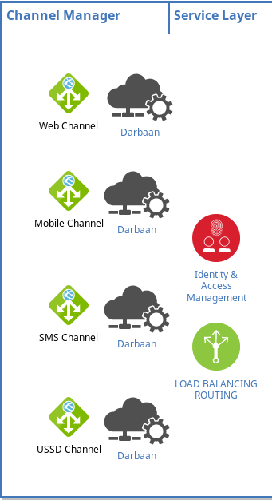

Piran Platform
By Isa Hekmatizadeh
The Goal
Piran Platform is to create applications with these characteristics:
- Easy to develop
- Scalable
- Highly customizable:
customization should be developed Easily and Fast while adopting
dynamically
- Fault Tolerant:
no single point of failure
- Easy to maintain
How components find and connect to each other?
- Geev
: node discovery by PIRAN/RBND protocol
- ZeroMQ: OpenSource socket level point-to-point
queueing
used by: CERN, Microsoft, Spotify, Samsung ...
- Piran Custom Protocols: PIRAN/DASTOOR,
PIRAN/SAFIR-DARBAAN
Gateway library
- Dynamic service discovery
- Load balancing
- Connect to Safir nodes by PIRAN/SAFIR-DARBAAN
protocol
- Handling Function permissions
- Allow channels to focus on their business
needs

Service Container
By the help of Ganjex(passive
dynamic container) Safir serve
frequently changing services. Safir connect to Darbaan nodes by
PIRAN/SAFIR-DARBAAN protocol and route requests to their services
Infrastructure Services
Infrastructure services which will be provided to services by Safir
- Data Access service
- Integration service
- Common Utilities
- Base Data service
- Data Permissions service
Monitoring and Management Dashboard
All Nodes connect to Dastoor by PIRAN/DASTOOR protocol
What does Dastoor do?
- Dynamically discovers: Channels, Safir nodes and
Services
- Monitors Channels, Safir nodes and Services
- Deploys, Changes or removes services
- Manages Services security
- Sends Management command to nodes
- Toggles Tracing mode dynamically on specific
service
Divaan (TODO)
Audit and Log Aggregator
Every node should connect to Divaan by PIRAN/DIVAAN(TODO)
protocol and
send Auditing
and service logs to it. Divaan hasn't separate dashboard, Dastoor show the
resulting information fetched from Divaan